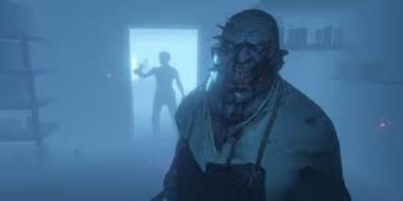

Game recommendations
Key:
• Click name links to go to the websites
• Click image to see a more indepth video
FiveM The mod project, named FiveM, has been active now for several years.
It allows users to play GTA5 with custom multiplayer modes and separate servers from Rockstar's own. It also allows users to produce map mods.
Phasmophobia is a 4 player online co-op psychological horror.
Paranormal activity is on the rise and it’s up to you and your team to use all the ghost hunting equipment at your disposal in order to gather as much evidence as you can.

Sid Meiers Civilization VI is a turn-based strategy, the goal for the player is to develop a civilization
from an early settlement through many in-game millennia
to become a world power and achieve one of several victory conditions,
such as through military domination, technological superiority, or cultural influence, over the other human and computer-controlled opponents.
Players do this by exploring the world, founding new cities, building city improvements, military troops to attack and defend from others,
researching new technologies and civics advancements, developing an influential culture, and engaging in trade and negotiations with other world leaders.